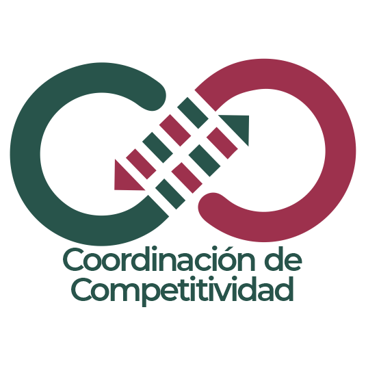

Plan Operativo MC 2026 · Modelo Institucional para la Competitividad
Unidad de Medicina Familiar 37Esta herramienta permite gestionar y dar seguimiento a las acciones de mejora derivadas de la evaluación del Modelo Institucional para la Competitividad (MIC). Selecciona un criterio para acceder a su plan de mejora detallado, registrar avances y adjuntar evidencias.
Diagnóstico situacional, planeación estratégica y operativa, alineación al PIIMSS, objetivos, indicadores y recursos.
Conocimiento, atención, interacción positiva, satisfacción de la PDU. Variables con calificación parcial / no cumple y acciones de mejora.
Liderazgo en acción, competencias de la alta dirección, gestión directiva y resultados del liderazgo.
Gestión de procesos, seguimiento y control, seguridad en instalaciones, resultados de procesos.
Desarrollo del talento humano, bienestar y satisfacción laboral, clima organizacional y resultados.
Gestión del conocimiento, comunicación organizacional, innovación y resultados.
Integridad, igualdad sustantiva, inclusión, relación con la comunidad de influencia, resultados.
Equipo de evaluación, proceso de evaluación interna, externa y mejora continua.